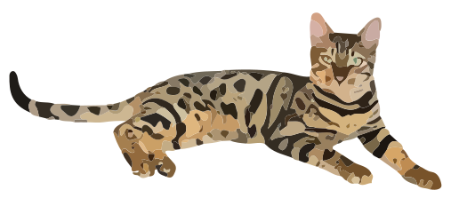

Designing for augmented reality is both exciting and terrifying
Begin
The most obvious place to look is at movies. There are a million examples, but the most commonly thought-of ones are Iron Man and Minority Report.
These movies introduce some great concepts,
and also things that look great on screen but would be terrible in real life.
When designing AR user experiences, it is important to keep in mind three
Rule 1: All objects should be anchored
Rule 2: Object should never appear without the user’s permission
Rule 3: Arm gestures are not a suitable navigation method
Keep these rules in mind, we'll come back to them in a bit
Objects in an AR environment are analogous to objects in the real world.

A Display
A Globe

A Cat
Let's take a globe.
A user could walk up to the globe and spin it around. She also could do things with this virtual globe that aren't possible with a real globe. She could zoom into a country, pin her favorite locations, or visualize live seismic activity.
1
This brings us to our first rule: All objects should be anchored. Anchoring an object means that it stays attached to a place in the real world. Although it may often be tempting to float objects in front of your face, doing so breaks the illusion that objects are objects. If you need to look more closely at an object, either walk to the object or move its anchor location to a surface nearby.
Info is flat information that can be integrated into objects or viewed by itself in a non-anchored way. Info is very much what you would traditionally see on a computer, tablet, or smartphone. Info could be your Twitter feed, but it could also be a program such as a word processor or web browser. Info is AR's way of handeling legacy programs and is also for mediums that don't benifit from being in 3D space.
Integrating info into objects is a major use of augmented reality. For example, a TV show would be an info element that could be displayed on a TV object that is anchored to your living room wall. If you decide mid-episode that you want to go for a run, you could move the TV show to your face and bring it with you.
Experiences come in all shapes and sizes and are perhaps the most exciting use of AR. An experience could involve building a snowman with your favorite animated movie character, touring and modifying the 3D model of a building, or being directed item by item on your shopping list inside a grocery store.
2
Now for our second rule: objects should never appear without a user's permission. In other words, no pop-up ads. For example, it would be a violation of this rule for a giant ceral-selling tiger to automatically appear by the entrance of a grocery store for all users. Instead, the tiger could appear only for users that have chosen to use the store's experience. If automatic objects were allowed, they would quickly become obtrusive and annoying to users. By restricting non-user placed objects to inside experiences, we can still have promotional content while letting the user choose, on his own terms, if and when to see it.
3
My last rule is the most controversial and the most often violated, but it is also the one I feel most strongly about.
Using arm gestures is not the proper way to navigate an AR environment.
The idea of arm gestures seems natural because of Minority Report and how we interact with our real-world environment. However, we rarely hold real-world objects in mid air for periods of time, and when we touch and manipulate things we get immediate physical feedback that slightly flexes stretched muscles. Using arm gestures for AR requires holding your arm at an unnatural angle for long periods of time with no feedback, which quickly leads to fatigue and pain. If you look at the history of consumer electronics, every product that has required similar arm stress has failed.
This is not an easy restriction to get around. Microsoft, Magic Leap, and Meta all use arm gestures as their primary IO method. I think the best solution may be hand gestures that can be performed while your arm is by your side or even in your pocket. This would either require users to wear a glove or advanced muscel/nerve sensing technology that doesn't yet exist.
Next
Previous
Chapter 3:
UX Design
Examples